Manual do Usuário — Pre-Sales Compliance Platform
Este manual cobre o uso do dia a dia do Pre-Sales Compliance Platform: como criar projetos, deixar
a IA analisar editais e especificações técnicas, gerar propostas, conduzir aprovações e gerenciar
Provas de Conceito (POC). Para configurações administrativas (usuários, perfis, IA, templates,
integrações), veja o Manual de Administração.
Sumário
4-bis. Demandas de Pré-Vendas (integração com o CMCRM)
O que é o Pre-Sales Compliance Platform
O Pre-Sales Compliance Platform é a ferramenta usada pela equipe de pré-vendas para transformar um
edital, termo de referência ou especificação técnica em uma proposta comercial completa, com o
apoio de Inteligência Artificial em cada etapa: extração de requisitos, identificação de riscos e
oportunidades, montagem de lista de materiais (BOM) com precificação, e geração do texto final da
proposta em múltiplos formatos.
O fluxo típico é:
Documento do cliente (edital/especificação)
│
▼
Análise por IA (requisitos, riscos, BOM)
│
▼
Geração de proposta(s)
│
▼
Fluxo de aprovação interna
│
▼
Proposta final exportada (DOCX/PDF)
│
▼
(opcional) Prova de Conceito (POC) com o clientePrimeiro acesso
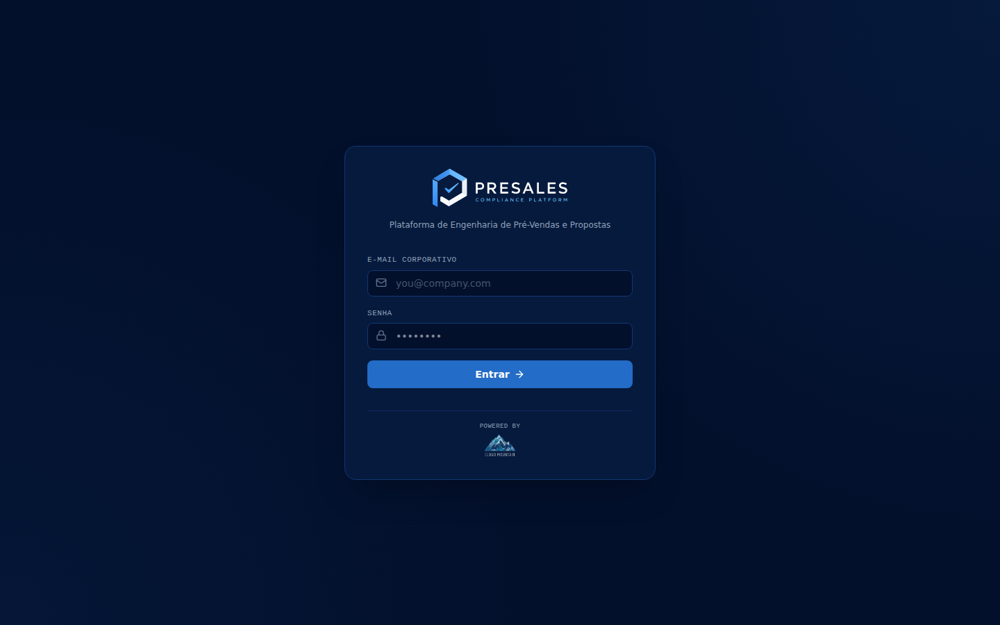
Acesse a URL da sua instância e informe e-mail e senha. As credenciais são criadas por um
administrador — não existe autocadastro.
Se sua conta tiver autenticação em duas etapas (MFA) habilitada, uma segunda tela pede um
código de 6 dígitos gerado pelo seu aplicativo autenticador (Google Authenticator, Authy, etc.).
Esqueci minha senha. Fale com um administrador — a redefinição de senha é feita por eles em Configurações → Usuários e Acessos (veja o Manual de Administração).
Página Inicial
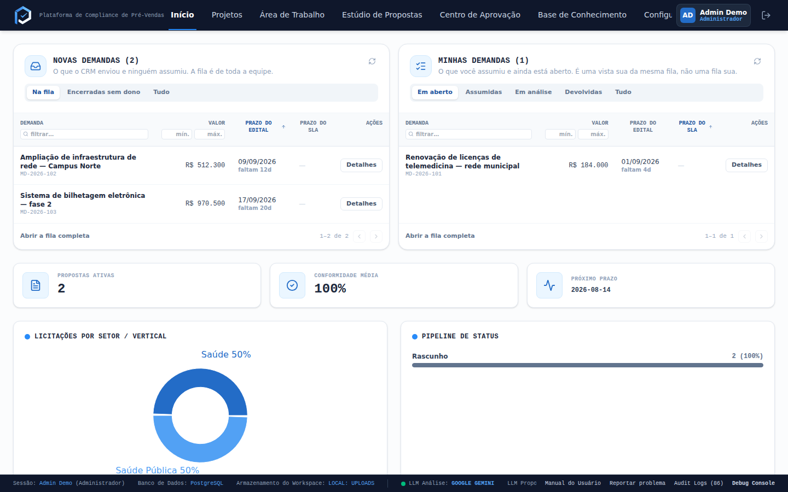
Ao entrar, você cai na Página Inicial, seu painel do dia a dia. De cima para baixo:
- Novas demandas / Minhas demandas — só aparece em instalações integradas ao CMCRM, ou assim
que a primeira Demanda chegar. São os dois cards da fila de pré-vendas — veja a seção
4-bis para o que cada um faz.
- Cards de indicadores — Propostas Ativas (total de projetos), Conformidade Média (dos
projetos já analisados), Próximo Prazo (o mais próximo entre todos os projetos) e, se o módulo de
Prova de Conceito estiver habilitado, POCs Ativas (com o total de ganhas/perdidas logo abaixo).
- Licitações por Setor / Vertical — gráfico de pizza com a distribuição dos projetos por
vertical de negócio (Saúde, Educação, Transporte etc.), para enxergar onde está concentrado o
esforço comercial.
- Pipeline de Status — barra de progresso por status de projeto (Rascunho, Análise em
Andamento, Aguardando Interno, Concluído), com contagem e percentual.
- Desempenho da fila — só para quem enxerga a fila de Demandas: gráfico com o tempo médio de
resposta da equipe (do envio à assunção) e, se você tiver Demandas em aberto, o seu próprio
desempenho ao lado da média.
A Página Inicial não tem mais um botão para criar projeto: isso mudou de lugar na Fase 10 da integração com o CMCRM. O ponto de partida agora é a aba Projetos — veja a seção 4.
Projetos
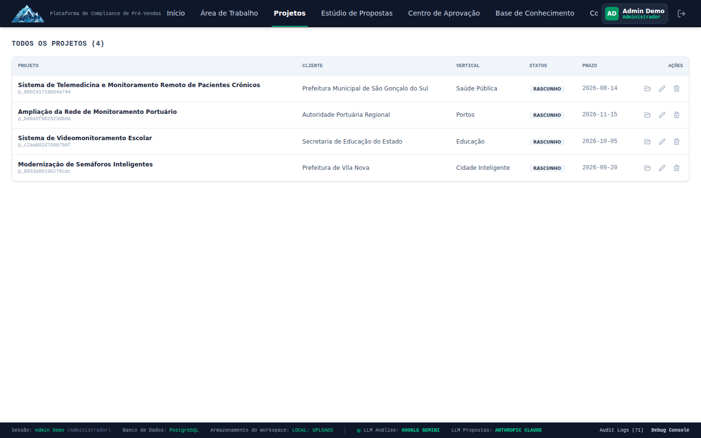
A aba Projetos lista todos os projetos da sua organização em formato de tabela: nome, cliente,
vertical, status e prazo final.
- + Novo Projeto, no canto superior direito da lista, abre o assistente de criação de projeto
(seção 5) — é o único ponto de partida para um projeto novo hoje na interface, além do atalho
equivalente dentro da própria Área de Trabalho de um projeto já aberto.
- Clique em qualquer linha para abrir o projeto na Área de Trabalho.
- O botão de editar permite corrigir os dados cadastrais do projeto (não o conteúdo gerado
pela IA).
- O botão de excluir apaga o projeto permanentemente — o sistema pede confirmação antes.
Editar e excluir exigem permissão específica (project:update/project:delete). Se você não vir esses botões, seu perfil de acesso não tem essa permissão — fale com um administrador.
4-bis. Demandas de Pré-Vendas (integração com o CMCRM)
*(Esta seção só se aplica a instalações integradas ao CMCRM — o CRM interno da empresa. Se sua
instalação é standalone, os dois cards da Início e a fila descritos aqui simplesmente não
aparecem, e você cria todo projeto pelo fluxo da seção 5.)*
De onde vem uma Demanda
Uma Demanda chega pronta do CMCRM: um vendedor, ao qualificar uma oportunidade por lá, clica em
"Enviar para pré-vendas". Junto viaja a ficha que a IA do CRM já montou a partir da
oportunidade — cliente, escopo, prazo, modalidade de contratação — mais os documentos anexados
(edital, especificação técnica). Você não precisa pedir nada a esse vendedor nem reabrir a
conversa: a Demanda chega pronta para alguém da equipe assumir.
A fila é única, de toda a equipe
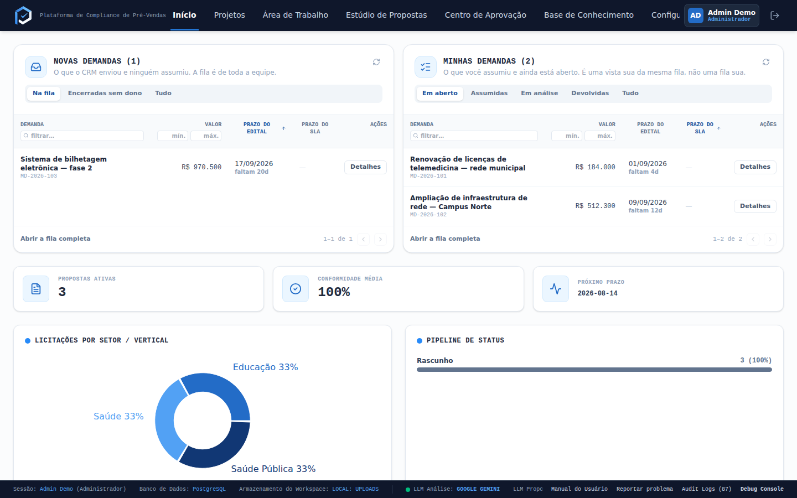
Os dois cards no topo da Início mostram a mesma fila, sob dois recortes diferentes:
- Novas demandas — o que o CRM enviou e ninguém assumiu ainda. É de toda a equipe: todo
mundo com acesso à fila vê exatamente as mesmas linhas aqui.
- Minhas demandas — o que você já assumiu e ainda está em aberto. É uma vista sua da mesma
fila, não uma fila separada seguindo só você.
Em cada card, clique em Detalhes numa linha para abrir a Demanda e decidir o que fazer com ela;
clique em Abrir a fila completa para ver a lista inteira, com mais colunas e filtros — a mesma
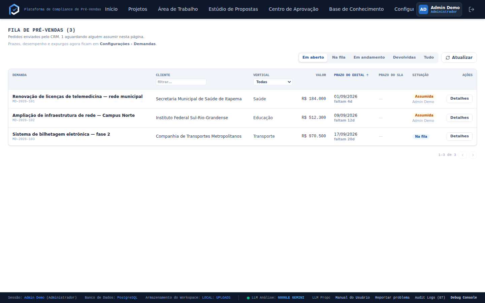
Auto-serviço é o padrão: qualquer pessoa da equipe pode assumir qualquer Demanda na fila,
clicando em Assumir e abrir projeto. Algumas instalações configuram, em vez disso, uma
política de direcionamento (o gerente de pré-vendas escolhe quem recebe cada Demanda) — nesse
caso o botão de assumir não aparece para quem não é gerente, e a tela avisa isso explicitamente.
Ao assumir, a Demanda vira um Projeto normal
Clicar em Assumir e abrir projeto cria um Projeto imediatamente e leva você direto para a Área
de Trabalho dele. A partir daí, é o mesmo fluxo já descrito nas seções seguintes deste manual —
Resumo Executivo, Matriz de Requisitos, BOM, Estúdio de Propostas etc. Nada muda por o projeto ter
vindo de uma Demanda em vez de um upload manual.
Devolver uma Demanda
Se depois de assumir você perceber que não é o caso certo para você (ou que falta informação),
abra a Demanda e clique em Devolver ao vendedor, com um motivo — é esse motivo que o vendedor
lê para saber o que corrigir antes de reenviar. Em instalações com gerente de pré-vendas
configurado, a devolução vira um pedido, que o gerente aprova ou recusa; sem gerente, ela volta
direto para a fila.
O que muda depois do envio
Duas coisas chegam à Demanda depois que ela já foi assumida, sempre como aviso — nunca em silêncio:
- Atualização do CRM aguardando decisão — se algo mudou na oportunidade depois do envio
(prazo, escopo, valor), a Demanda mostra o antes e o depois de cada campo alterado. Nada é
escrito automaticamente no seu projeto: você decide, campo por campo, Levar para o projeto ou
Não levar.
- Cancelamento aprovado no CRM — se o vendedor cancelar a oportunidade lá (sempre com
justificativa, aprovada pelo líder dele), a Demanda mostra o aviso e, quando chega sua vez de
decidir, o botão Encerrar demanda.
Os dois avisos também aparecem resumidos no topo da Início, acima dos cards, sempre que houver algo
esperando sua decisão.
Criar um novo projeto
Existem dois caminhos para criar um projeto: com IA (recomendado, mais rápido) e manual. Os
dois começam do mesmo lugar: clique em + Novo Projeto na aba Projetos (seção 4) — ou, com um
projeto já aberto, no atalho equivalente da Área de Trabalho.
1 Fluxo com IA (recomendado)
Passo 1 — Enviar Documentos
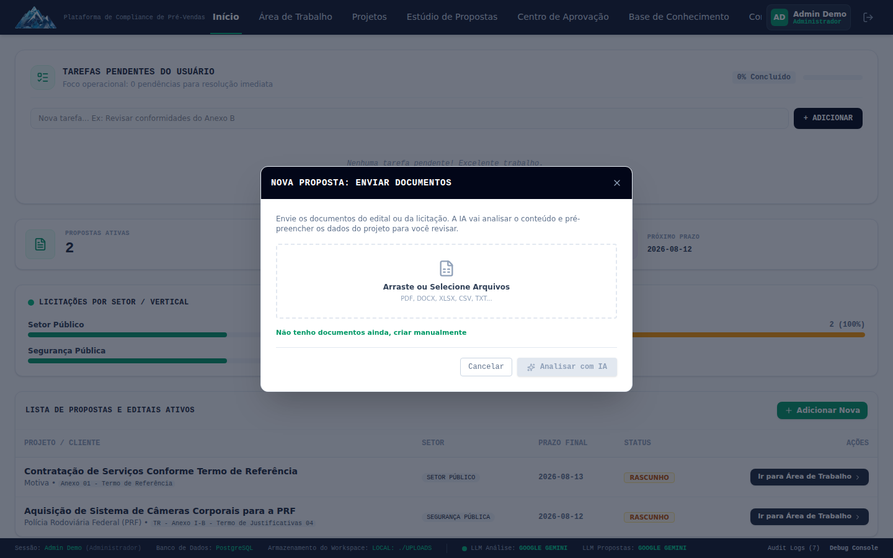
Arraste ou selecione o(s) arquivo(s) do edital/especificação técnica do cliente (PDF, DOCX, etc.)
e clique em Analisar com IA. A IA lê o(s) documento(s) e pré-preenche automaticamente os campos
do projeto: título, cliente, vertical, escopo, prazo, modalidade de contratação, entre outros.
Passo 2 — Validar Dados
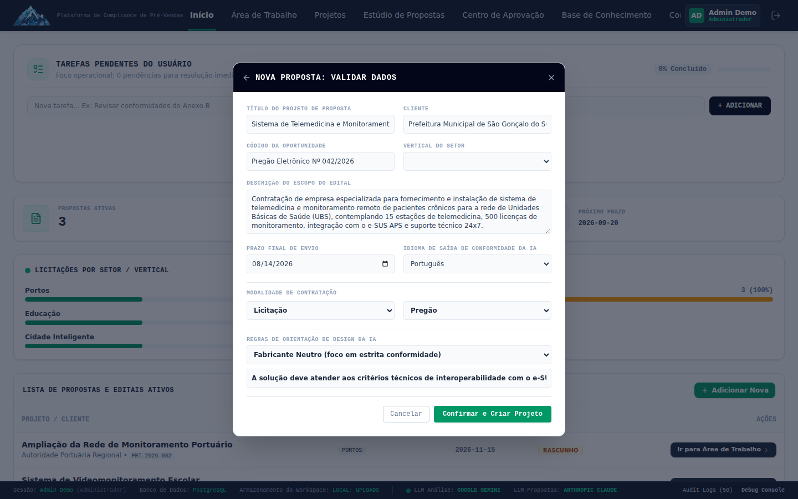
Revise o que a IA extraiu e corrija o que for necessário — todos os campos ficam editáveis. Quando
estiver correto, clique em Confirmar e Criar Projeto.
Campos disponíveis:
| Campo | Descrição |
|---|---|
| Título do Projeto | Nome interno de identificação |
| Cliente | Nome do cliente/órgão |
| Código da Oportunidade | Referência interna (CRM, número do processo, etc.) |
| Vertical do Setor | Área de negócio (Saúde, Educação, Transporte...) |
| Descrição do Escopo | Resumo do que está sendo licitado/contratado |
| Prazo Final | Data limite para entrega da proposta |
| Idioma de Saída da IA | Idioma em que a IA vai gerar textos de conformidade |
| Modalidade de Contratação | Licitação, Leilão ou Outra (com subtipo específico) |
| Regras de Orientação de Design da IA | Instruções extras para guiar o tom/estilo da IA |
2 Fluxo manual (sem IA)
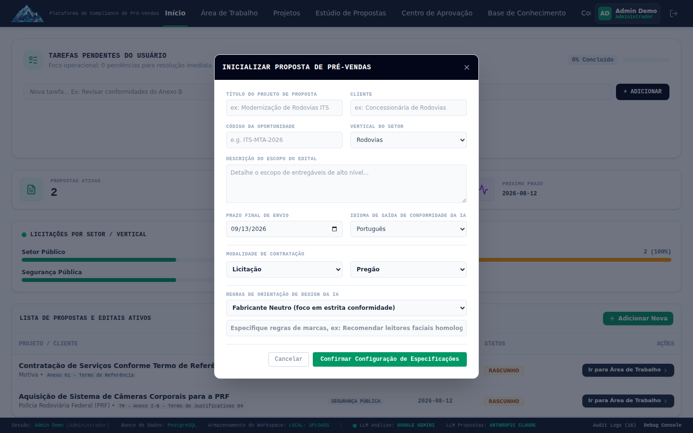
Se você ainda não tem os documentos do cliente em mãos, ou prefere cadastrar o projeto sem
análise automática, clique no link "Não tenho documentos ainda, criar manualmente", dentro do
Passo 1 do assistente. Isso abre um formulário direto com os mesmos campos da tabela acima, sem
upload nem análise de IA.
Importante: o upload de documentos só acontece na criação do projeto. Depois de criado, não há uma tela para anexar novos documentos ao mesmo projeto — os documentos de referência que você quiser adicionar depois entram pela Base de Conhecimento (seção 9) ou pelo Explorador de Arquivos dentro do projeto (seção 6.6), que permite criar documentos de texto/notas, mas não reanalisar um PDF novo pela IA. Se precisar reprocessar um documento novo do cliente com IA, crie um novo projeto para ele.
Área de Trabalho do projeto
Depois de aberto, um projeto tem 6 sub-abas horizontais. Uma coluna fixa à direita mostra as
Perguntas de Esclarecimento Urgentes identificadas pela IA (com prioridade e motivo) e o botão
flutuante do Copiloto de Especificações.
1 Resumo Executivo de Conformidade
Visão consolidada gerada pela IA: um resumo executivo do que está sendo pedido, mais um cronograma
preliminar de engenharia sugerido.
2 Grade de Requisitos
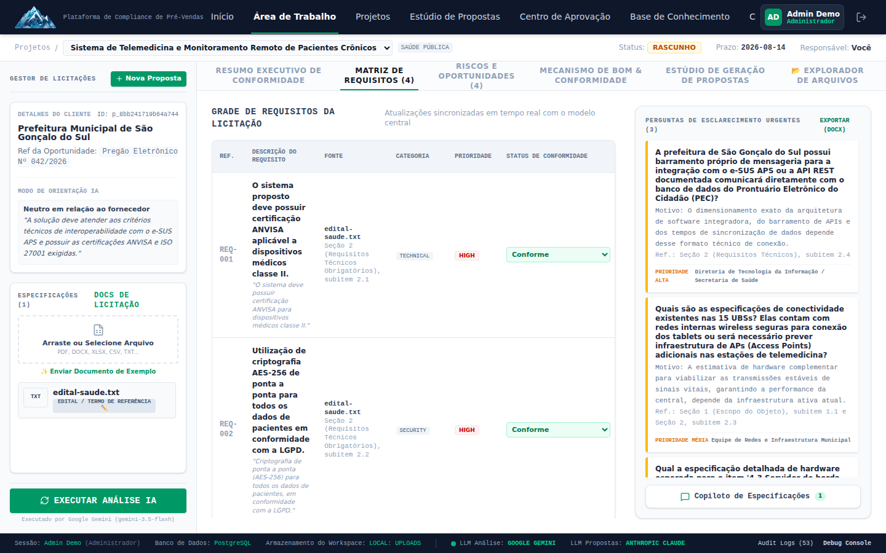
Matriz com todos os requisitos técnicos e comerciais extraídos do documento original. Cada linha
pode ser editada — inclusive para adicionar notas de engenharia próprias, complementando o que a
IA identificou.
3 Riscos e Oportunidades
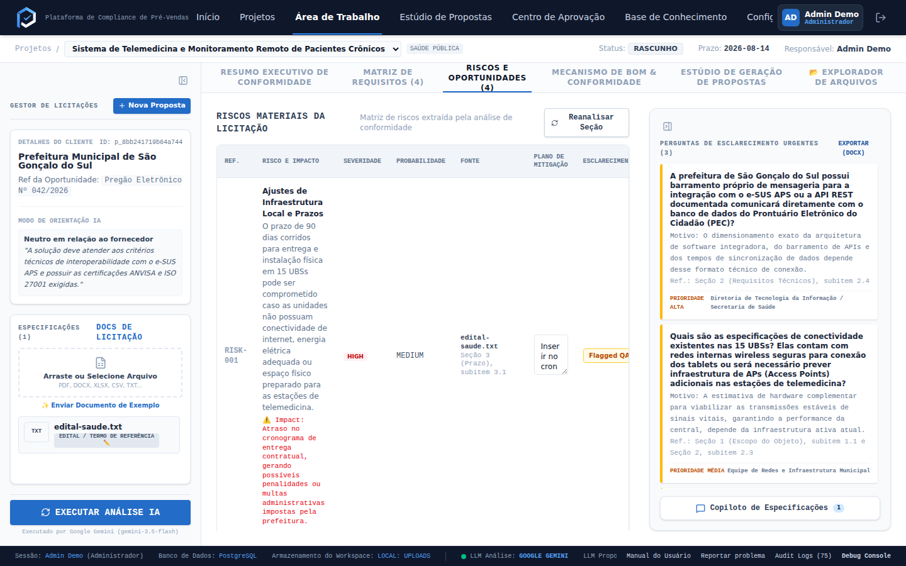
Dois grupos de itens identificados pela IA:
- Riscos — pontos do edital que podem gerar problema contratual, técnico ou financeiro.
- Oportunidades — pontos onde é possível fazer upsell, oferecer um SLA diferenciado, ou
destacar um diferencial competitivo.
4 BOM & Conformidade
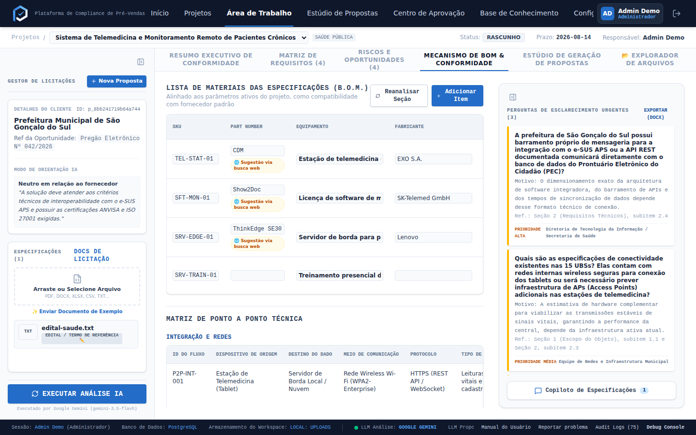
Lista de materiais (Bill of Materials) extraída ou montada a partir do escopo do projeto, com
precificação e uma matriz de conformidade ponto a ponto (item do edital → item ofertado). Use
Adicionar Item para incluir manualmente um item que a IA não tenha identificado.
5 Estúdio de Geração de Propostas
A partir daqui você gera qualquer um dos formatos de proposta disponíveis:
| Tipo de proposta | Uso típico |
|---|---|
| Técnica | Foco em especificações e conformidade |
| Comercial | Foco em preço e condições comerciais |
| Técnico-Comercial | Combina as duas anteriores |
| Resumo Executivo | Versão curta para tomadores de decisão |
| Relatório de Riscos | Documento interno de análise de risco |
| Relatório de BOM | Lista de materiais formatada para envio |
| Relatório de Perguntas | Consolida as perguntas de esclarecimento a enviar ao cliente |
Cada proposta gerada fica disponível para edição e exportação no Estúdio de Propostas (seção 7).
6 Explorador de Arquivos
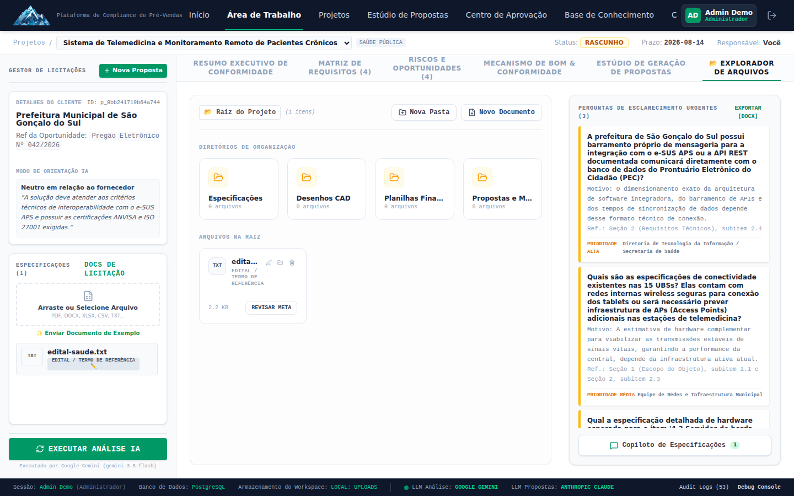
Organizador de documentos do projeto em pastas virtuais. Já vêm 4 pastas padrão: Especificações,
Desenhos CAD, Planilhas Financeiras e Propostas e Minutas. Você pode criar novas pastas,
mover/renomear itens, e criar Novos Documentos de texto (notas, minutas) diretamente aqui —
mas, como explicado na seção 5.2, este explorador não substitui o upload de um documento real do
cliente para nova análise por IA.
7 Perguntas de Esclarecimento e Copiloto de Especificações
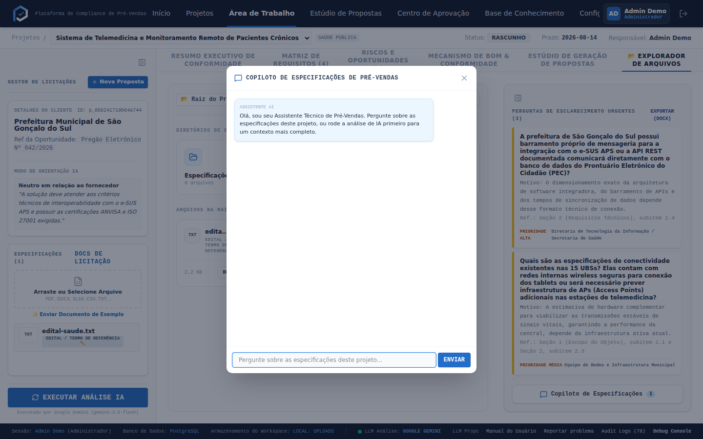
- A coluna direita lista as Perguntas de Esclarecimento Urgentes que a IA identificou como
necessárias para eliminar ambiguidade do edital antes de propor. Use Exportar DOCX para
gerar um documento pronto para enviar ao cliente.
- O botão flutuante Copiloto de Especificações abre um chat onde você pode perguntar qualquer
coisa sobre os documentos do projeto ("qual o prazo de entrega do item 4?", "esse edital exige
certificação X?") e a IA responde com base no conteúdo já analisado.
Estúdio de Propostas
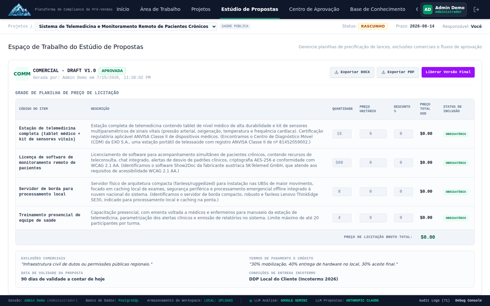
Lista todas as propostas já geradas para o projeto selecionado. Ao abrir uma proposta:
- O texto é editável diretamente na tela — o que você edita aqui é exatamente o que sai no
arquivo exportado.
- Exportar DOCX / Exportar PDF geram o arquivo final para download.
- Gerar Pareceres de IA produz 4 cards de análise da proposta, um por perspectiva — Técnico,
Comercial, Financeiro e Jurídico — cada um com ícone e cor própria; um selo de "crítico" ou
"atenção" aparece quando a IA encontra algo que merece revisão antes de enviar ao cliente.
- Enviar para Aprovação de Fluxo move a proposta para o Centro de Aprovação (seção 8).
Centro de Aprovação
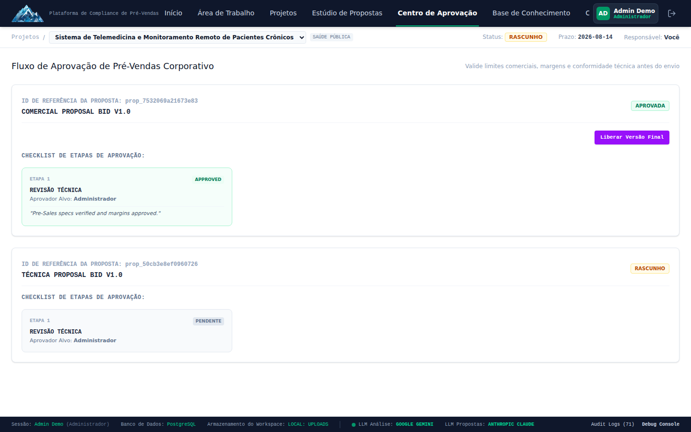
Mostra a trilha de aprovação de uma proposta enviada, com uma etapa por revisor configurado no
fluxo (configurado pelo administrador — veja o Manual de Administração). Cada etapa mostra:
- Quem é o aprovador responsável (pessoa ou perfil).
- O status atual (Pendente / Aprovado / Rejeitado).
- Comentário do aprovador, se houver.
Se você for o aprovador de uma etapa pendente, os botões Aprovar e Rejeitar aparecem para
você. Quando todas as etapas obrigatórias estiverem aprovadas, o botão Liberar Versão Final
fica disponível (requer a permissão proposal:approve).
Algumas regras importantes de como o fluxo funciona:
- As etapas não precisam ser decididas em ordem — cada aprovador pode decidir sua etapa a qualquer
momento.
- Cada etapa só pode ser decidida uma vez; não é possível voltar atrás.
- Uma rejeição em qualquer etapa encerra o processo inteiro na hora — as demais etapas
pendentes deixam de poder ser decididas.
Não consigo enviar minha proposta para aprovação. Se aparecer um erro dizendo que não há fluxo de aprovação ativo, é uma limitação conhecida: o vínculo entre projeto e fluxo de aprovação hoje só pode ser feito pelo time técnico, não por uma tela própria — peça para um administrador acionar o suporte técnico.
Base de Conhecimento
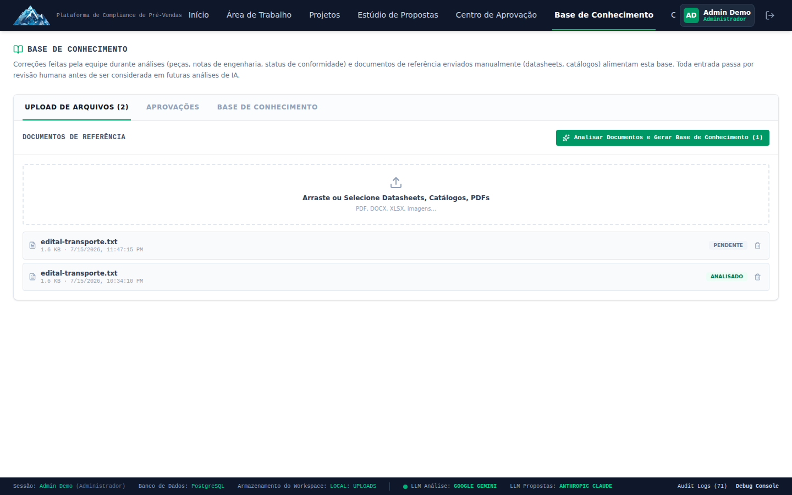
A Base de Conhecimento reúne material de referência reutilizável entre projetos — datasheets,
catálogos, informações técnicas recorrentes — para a IA consultar automaticamente em análises
futuras.
Três sub-abas:
- Upload de Arquivos — envie um documento de referência; a IA sugere trechos relevantes para
virarem entradas da base.
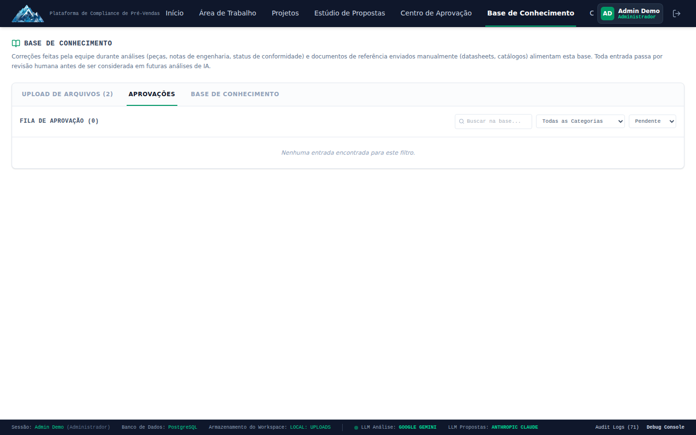
- Aprovações — entradas sugeridas (pela IA ou por colegas) aguardando revisão humana antes de
entrar oficialmente na base. Aprove ou rejeite cada uma.
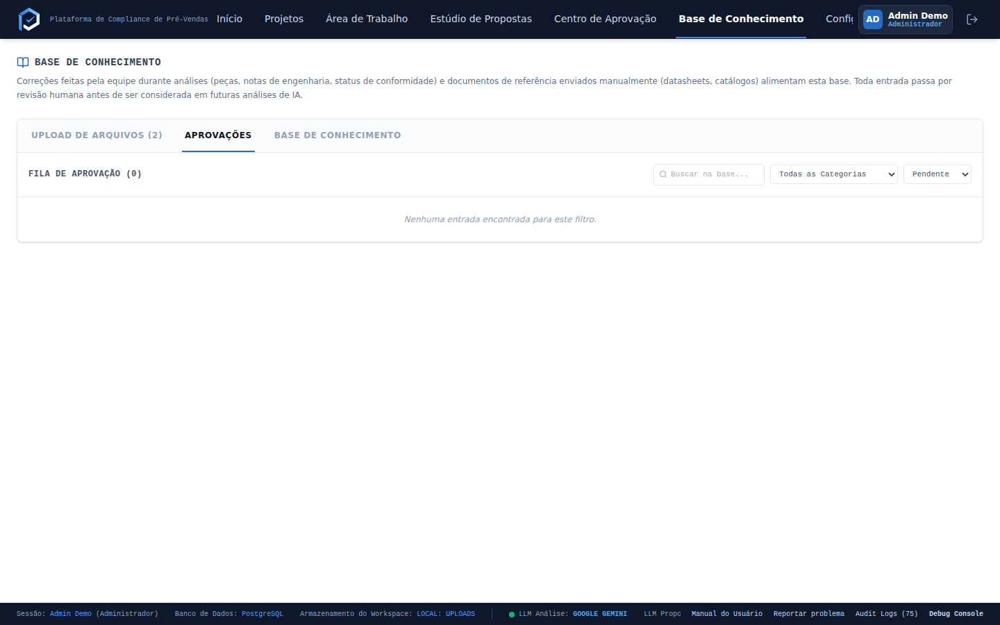
- Base de Conhecimento — todas as entradas já aprovadas, pesquisáveis e editáveis. Entradas
com o selo Global vêm de uma base compartilhada entre instalações (recurso de add-on,
gerenciado pelo administrador) — o conteúdo é o mesmo, só a origem é diferente.
Gestão de POC (Prova de Conceito)
Esta seção só aparece se o módulo de POC estiver habilitado na sua instância. *(Os prints desta seção dependem de uma instalação com licença de POC ativa emitida pelo CMSaaS — não incluídos nesta versão do manual; o texto abaixo descreve o funcionamento real da tela.)*
A tela principal é um quadro Kanban com as POCs organizadas por status: Não iniciada,
Planejada, Em andamento, Bloqueada, Concluída. Clique em Nova POC para criar
uma, ou em qualquer card para abrir o detalhe.
Cada POC tem 5 abas:
Visão Geral
Dados gerais da POC — cliente, local, datas, responsável.
Equipamento
Equipamentos alocados para a demonstração. Um indicador visual avisa quando algum item está com
devolução atrasada.
Cadernos de Teste
Casos de teste que serão executados durante a POC. Você pode:
- Regenerar com IA — a IA sugere um caderno de teste completo com base no escopo do projeto
(acompanhe pela barra de progresso).
- Adicionar manualmente — título, objetivo, passos e resultado esperado.
Cada caso de teste tem status próprio (Pendente / Em andamento / Aprovado / Reprovado), atualizado
conforme os testes são executados com o cliente.
Cronograma
Gráfico de Gantt com as tarefas da POC ao longo do tempo — arraste para ajustar datas, adicione
ou remova tarefas.
Aceite do Cliente
Ao final da POC:
- Registre nome e data de quem assinou o aceite, e anexe o documento assinado, se houver.
- Marque o resultado como Ganha ou Perdida.
- Responda o questionário do relatório final gerado pela IA — as respostas alimentam o relatório
final da POC.
- Clique em Finalizar para consolidar o resultado (o toggle Ganha/Perdida só é salvo neste
momento, não automaticamente).
Módulo de Precificação
Esta seção só aparece se o módulo de Precificação estiver habilitado na sua instância.
Aba de nível superior "Precificação", com 5 sub-abas.
Tabela de preços
Seu catálogo de itens: código interno, categoria, PN, descrição, preço de lista (R$ e US$) e
markup mínimo/máximo. A cotação R$/US$ usada nas conversões aparece no canto superior direito
(Banco Central, atualizável na hora ou editável manualmente). Clique numa linha para ver o
histórico de preço do item; use os ícones de lápis/lixeira ao lado de cada linha para editar ou
excluir diretamente.
Enviar Arquivos aceita dois tipos de arquivo ao mesmo tempo, num único envio:
- A planilha-modelo (baixe em Baixar modelo) — colunas fixas, entra direto no catálogo.
- Qualquer outro formato (PDF, foto, Word, planilha de fornecedor fora do padrão) — analisado
por IA, com progresso por arquivo em tempo real no próprio popup e um resumo no rodapé da tela.
Nenhum arquivo é rejeitado por falta de um campo (código, categoria, markup): o sistema tenta
completar sozinho a partir de um item que já exista no catálogo com o mesmo PN, e só pede pra você
revisar manualmente o que realmente não deu pra resolver — na aba Extrações pendentes.
Extrações pendentes
Linhas aguardando sua confirmação antes de entrarem de fato no catálogo — vindas tanto de
planilhas quanto de extração por IA. Edite qualquer campo direto na tabela (cada alteração salva
sozinha); linhas destacadas em âmbar ainda estão faltando algo obrigatório (preço, markup ou
código do item) e não podem ser confirmadas até completar. Selecione as linhas prontas e clique em
Confirmar para gravá-las no catálogo em lote, ou Rejeitar uma linha individualmente para
descartá-la.
Precificação de projeto
Dentro de um projeto: o BOM técnico é casado automaticamente contra o catálogo de preços (com um
nível de confiança do match), e você aplica desconto por linha. Se o motor fiscal estiver
configurado (sub-aba Motor fiscal), o imposto por linha (ICMS/IPI/ISS/ST conforme a UF de
origem) também é calculado aqui.
Itens sem preço
Itens do BOM que não casaram com nenhum item do catálogo — fila de pendência que se resolve
sozinha assim que o item correspondente for cadastrado (por PN).
Ao gerar a proposta
Quando o projeto já tem uma precificação real feita aqui, a proposta gerada usa esses valores
automaticamente — você não precisa digitar a tabela de preços de novo na tela de geração. Markup e
preço de lista nunca aparecem na proposta, só o preço final. Se algum item do BOM ficar de fora da
tabela da proposta por falta de preço cadastrado, um aviso mostra quantos itens foram deixados de
fora, sem impedir a geração.
Perguntas frequentes
Posso desfazer a exclusão de um projeto?
Não. A exclusão é permanente e pede confirmação antes — confira bem antes de excluir.
A IA errou um requisito/risco/item de BOM. Como corrijo?
Todos os campos gerados pela IA nas sub-abas da Área de Trabalho são editáveis diretamente. Edite
como faria com qualquer outro campo.
Consigo gerar a mesma proposta em dois formatos diferentes?
Sim — cada geração cria uma proposta nova e independente; gere quantos tipos precisar a partir do
Estúdio de Geração de Propostas.
Não vejo a aba de POC. O módulo de Prova de Conceito é habilitado por instalação — fale com um
administrador se achar que deveria estar disponível para você.
Não consigo aprovar/rejeitar uma proposta mesmo estando no fluxo. Confirme com um
administrador se você está configurado como aprovador daquela etapa específica (por usuário ou por
perfil) e se sua conta tem a permissão proposal:approve.